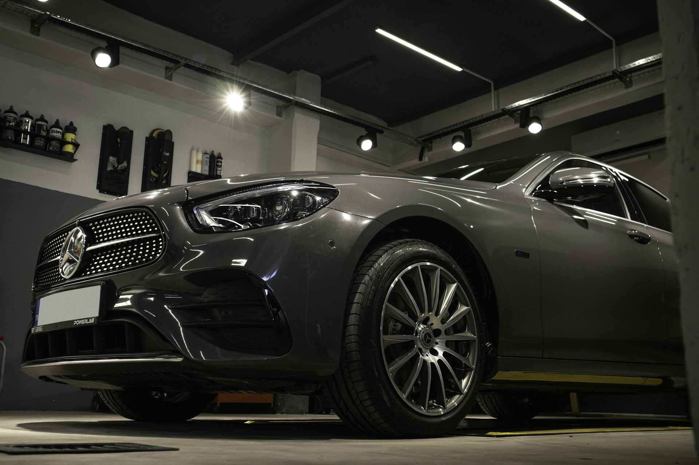
MAIS DO QUE UMA LAVAGEM.
CUIDAMOS DO TEU AUTOMÓVEL.
Lavagem premium, polimento, pintura e cuidados automóveis com atenção a cada detalhe.
Cuidados de Excelência Para a Tua Viatura
Combinamos técnicas de ponta, produtos de referência internacional e dedicação minuciosa para garantir acabamentos impecáveis.
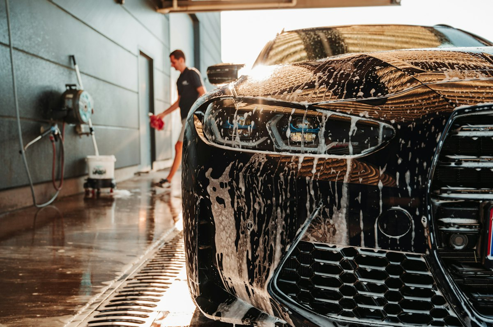
01Lavagem Premium
Lavagem técnica e detalhada com pré-lavagem de neve espumosa (snow foam), shampoo com pH neutro, desengorduramento de cavas e jantes, secagem delicada com microfibras sem risco e acabamento protetor.
- Pré-lavagem snow foam & toque delicado
- Tratamento aprofundado de jantes e pneus
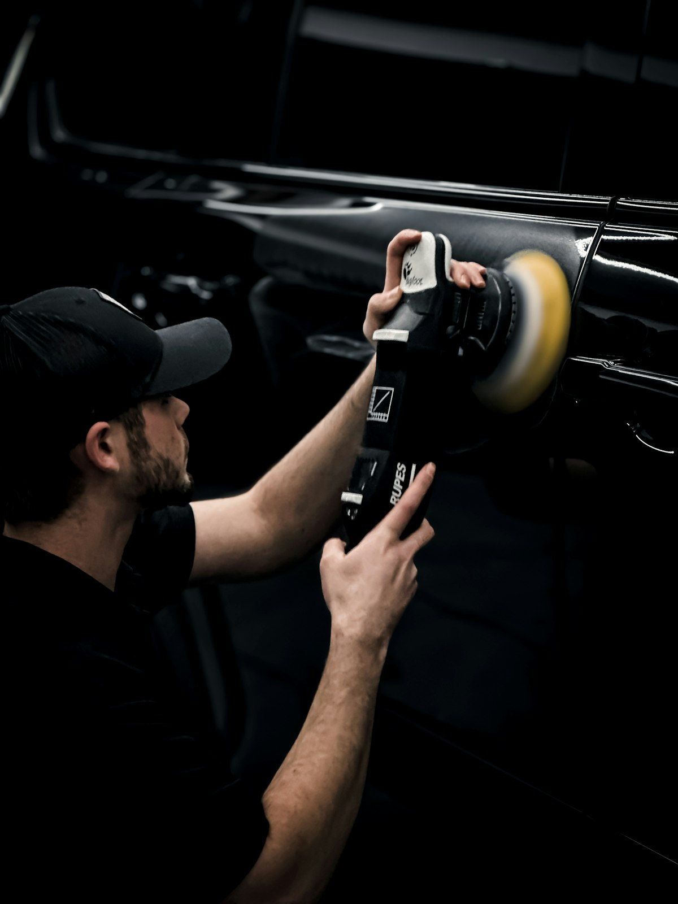
02Polimento Técnico
Correção de verniz em múltiplos estágios para eliminação de micro-riscos, teias de aranha (swirls), manchas e hologramas. Devolve a profundidade, a nitidez e o efeito espelho à pintura da viatura.
- Correção de verniz até 90%+ sem marcas
- Brilho profundo e reflexo de estúdio
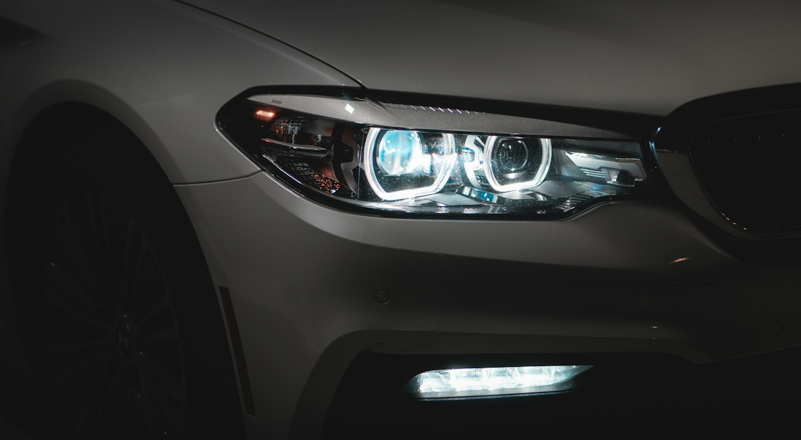
03Polimento de Faróis
Restauração integral de óticas oxidadas, amareladas e baças através de lixagem escalonada, polimento abrasivo de precisão e aplicação de selante protetor contra raios UV e novo envelhecimento.
- Mais luminosidade e segurança noturna
- Aprovação garantida na Inspeção Periódica
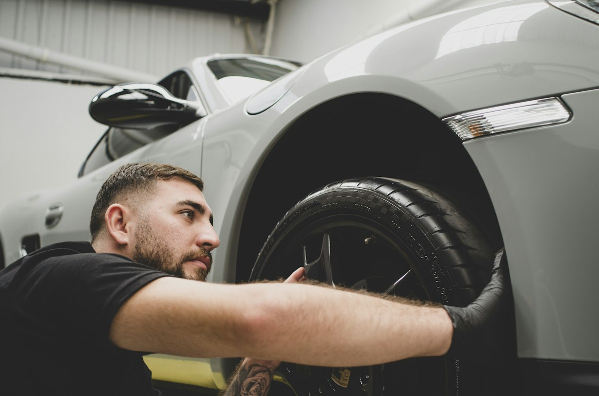
04Martelinho de Ouro
Técnica artesanal de alta precisão (PDR) para reparação de amolgadelas, mossas de estacionamento e granizo, sem necessidade de lixar ou pintar, conservando a pintura 100% original de fábrica.
- Preserva a tinta original e o valor de mercado
- Intervenção rápida, limpa e impercetível
 05
05
Pintura Automotiva
Pintura e repintura especializada de pára-choques, painéis, peças completas e jantes. Acerto computadorizado de cor para tonalidade idêntica à original e aplicação de verniz premium com estufa.
- Correspondência fiel ao código de cor original
- Verniz de alta resistência e durabilidade
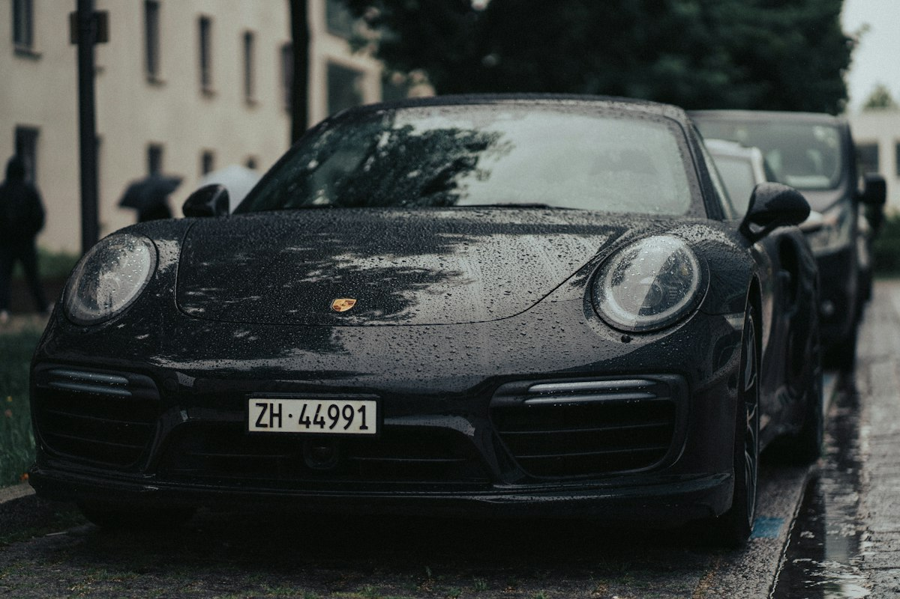
06Impermeabilização de Capotas
Tratamento específico para viaturas descapotáveis com capota de lona ou tecido: lavagem bactericida, descontaminação profunda e blindagem hidrofóbica que repele água, sujidade, mofo e radiação solar.
- Efeito hidrofóbico (água e líquidos escorrem)
- Proteção contra desbotamento e manchas ácidas
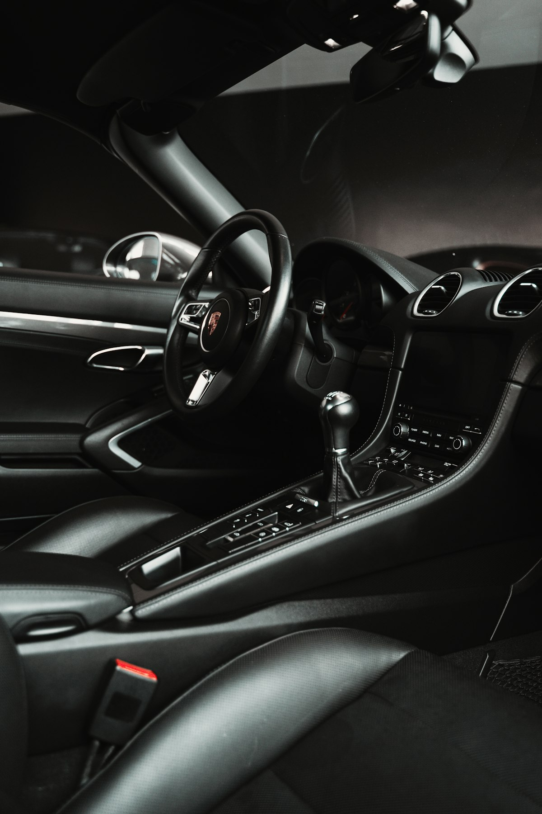
07Higienização e Ozonização
Desinfeção completa do habitáculo: aspiração e lavagem por injeção/extração de estofos, hidratação de peles e neutralização de 99,9% de germes, bactérias, ácaros e odores através de gerador de ozono.
- Eliminação definitiva de odores e fungos
- Ar puro, proteção antialérgica e toque nobre
Porquê Escolher a DJ Estética Automotiva?
Mais do que procedimentos rotineiros, aplicamos paixão e ciência automóvel para superar as expetativas dos clientes mais exigentes.
Atenção ao Detalhe
Não deixamos nada passar despercebido. Cada canto, friso, grelha e emblema recebe um tratamento minucioso com ferramentas e pincéis específicos de detailing.
Atendimento Personalizado
Cada cliente e cada carro são únicos. Ouvimos as tuas necessidades e diagnosticamos o estado da viatura antes de recomendar o plano de intervenção mais adequado.
Profissionalismo
Cumprimento rigoroso de horários, transparência nas informações e respeito absoluto pelo teu património. Trabalho sério do primeiro contacto à entrega das chaves.
Qualidade no Acabamento
Utilizamos produtos profissionais de alta gama e técnicas certificadas para assegurar um resultado estético superior, com brilho duradouro e toque sedoso.
Serviços Sob Medida
Soluções ajustadas ao uso e tipologia de cada viatura — desde a manutenção regular diária até à preparação minuciosa de supercarros e clássicos de coleção.
Transformações Reais Antes & Depois
Comprova o poder da nossa intervenção técnica através de resultados reais efetuados na DJ Estética Automotiva.
Teste de Polimento Técnico (50/50 em Verniz BMW)
Arrasta o divisor para comparar o verniz com riscos vs acabamento espelho
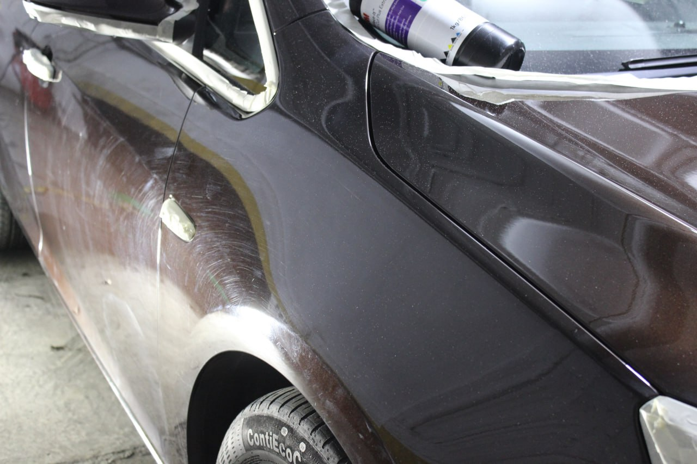
Antes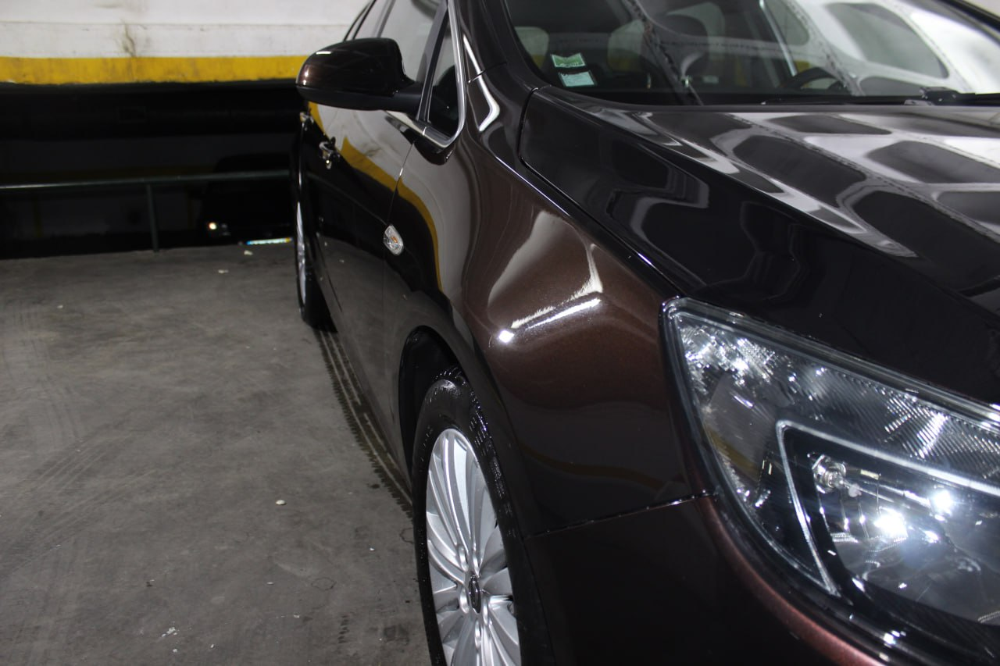
DepoisCorreção Técnica de Verniz
Eliminação total de micro-riscos circulares e restauração do brilho metálico original.
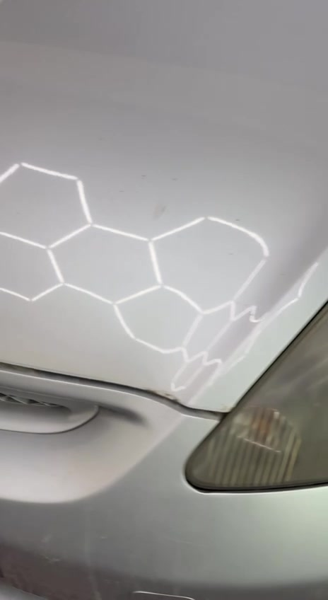
Antes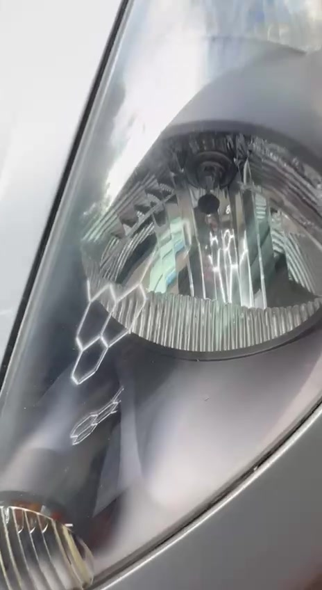
DepoisRestauração de Faróis
Remoção de camada opaca por lixagem fina e polimento de alto brilho com proteção UV.
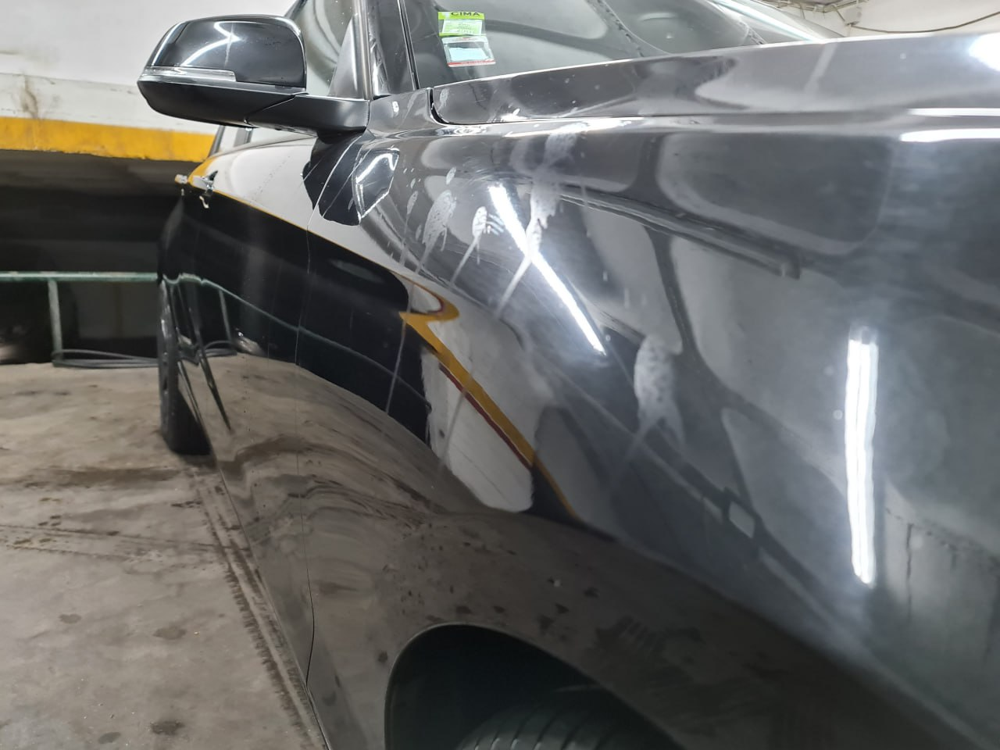
Antes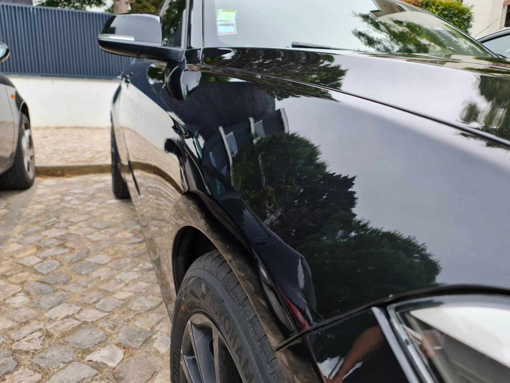
DepoisDescontaminação & Brilho Espelho
Remoção de marcas químicas e ataque ácido sobre o verniz em viatura preta.
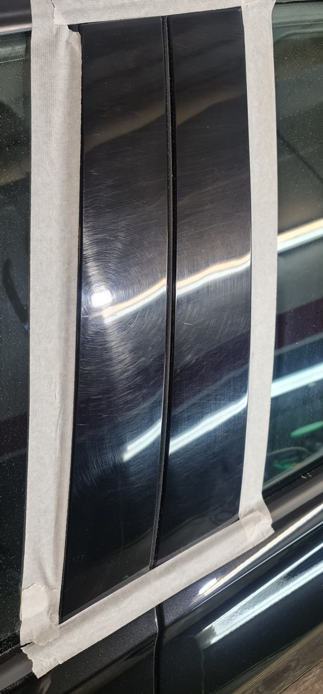
Antes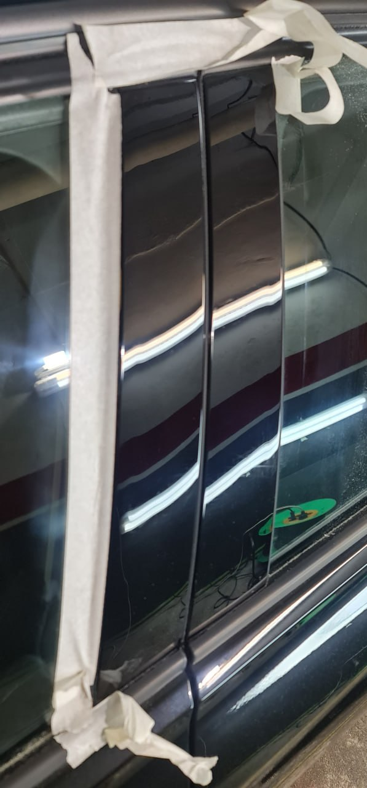
DepoisPolimento de Black Piano
Refinamento microscópico em plásticos de portas para eliminação de marcas de lavagem.
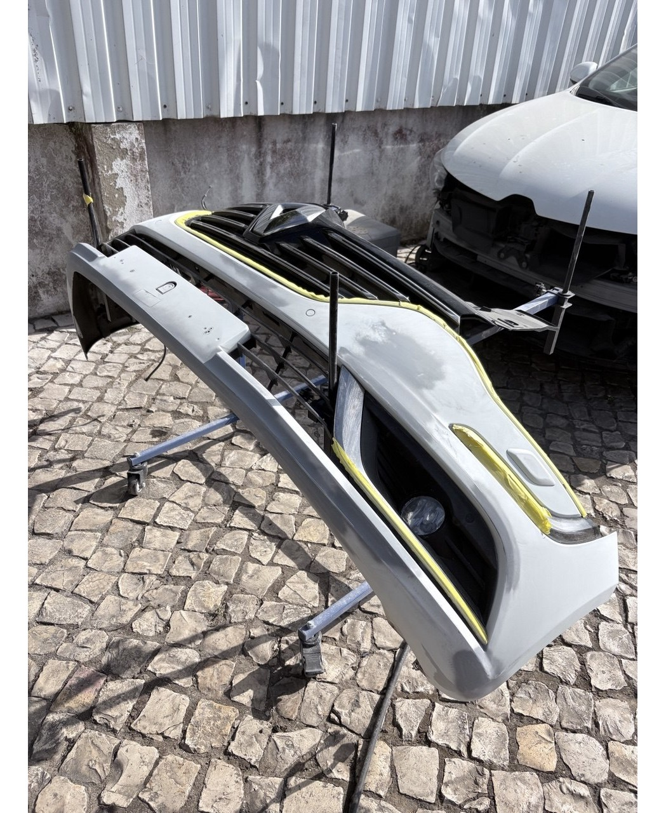
Preparação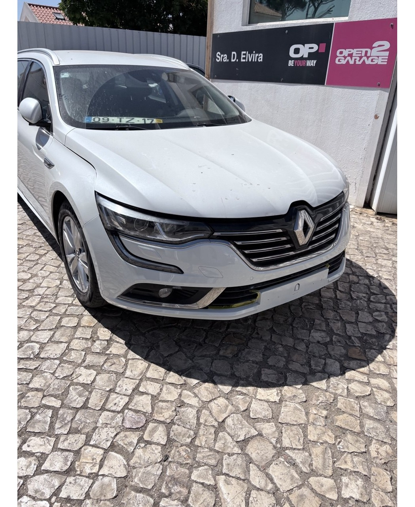
FinalizadoPintura & Ajuste de Pára-choques
Reparação plástica, primário de aderência, cor original e montagem alinhada de fábrica.
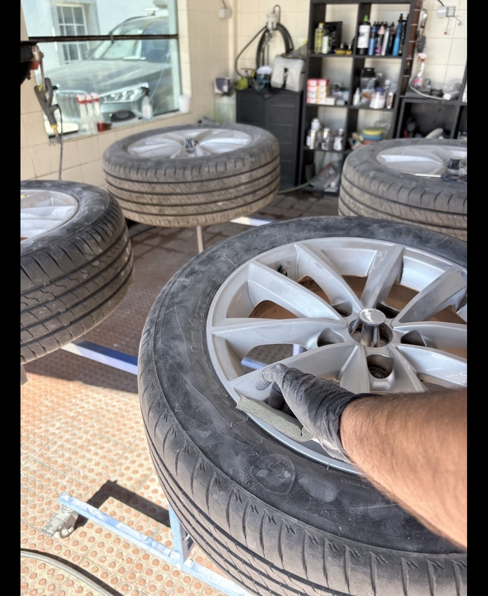
Recuperação Técnica de Jantes
Eliminação de raspões de passeio, lixagem de alta precisão e repintura especializada.
Estamos Prontos Para Cuidar do Teu Carro
Localização privilegiada na Torre, Cascais. Contacta-nos diretamente por telefone, WhatsApp ou visita o nosso estúdio.
DJ Estética Automotiva
Cascais, Portugal · Excelência em Cuidados Automóveis
Av. da Torre, 1021
Cascais, Portugal